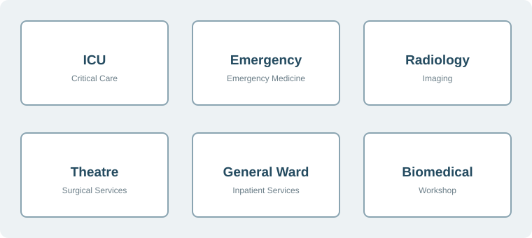

Critical Care
ICU — ventilators and patient monitors.
Select a location on the illustrative map to view its operational area.

The map is a conceptual navigation aid, not a certified hospital floor plan.
ICU — ventilators and patient monitors.
Emergency department monitoring and resuscitation equipment.
Workshop — inspection, repair and verification.